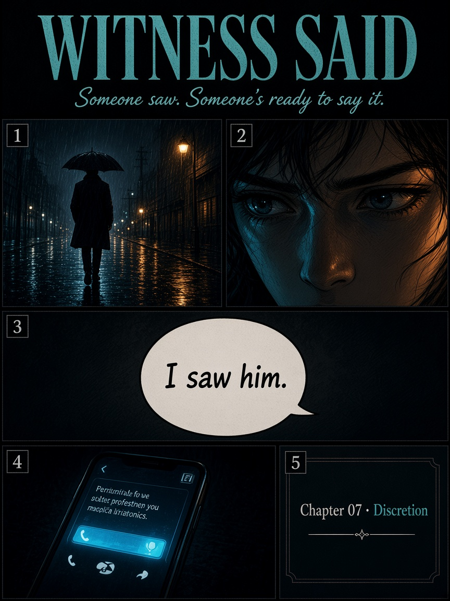
Someone saw. Someone’s ready to say it.
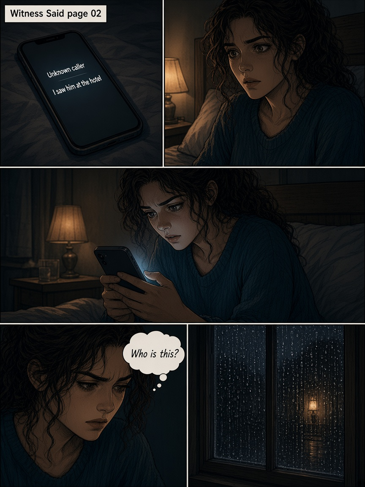
Unknown number. Known chill.
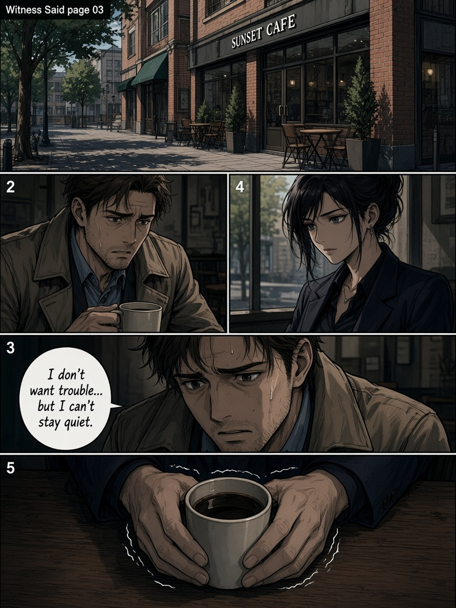
I don’t want trouble… but I can’t stay quiet.
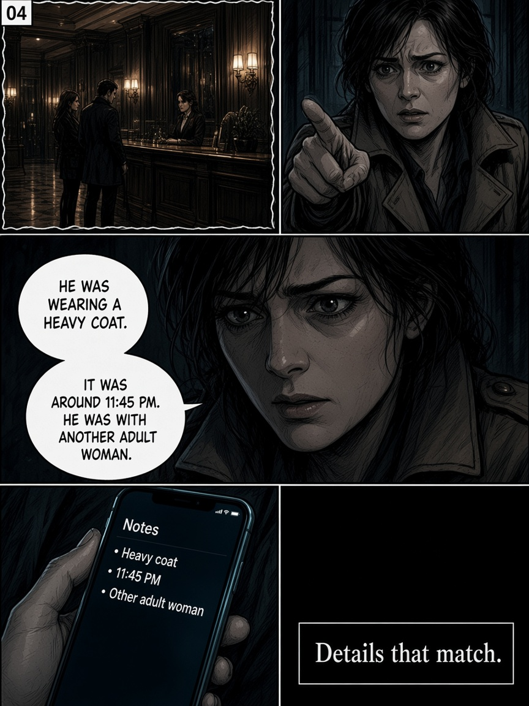
Details that match.
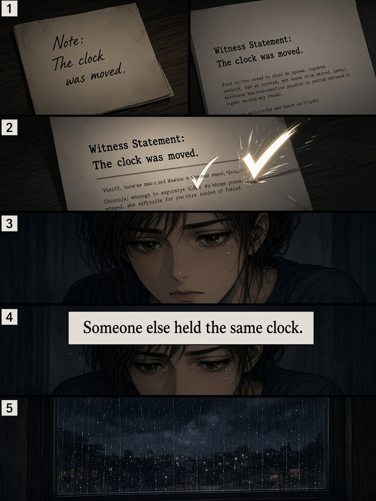
Someone else held the same clock.
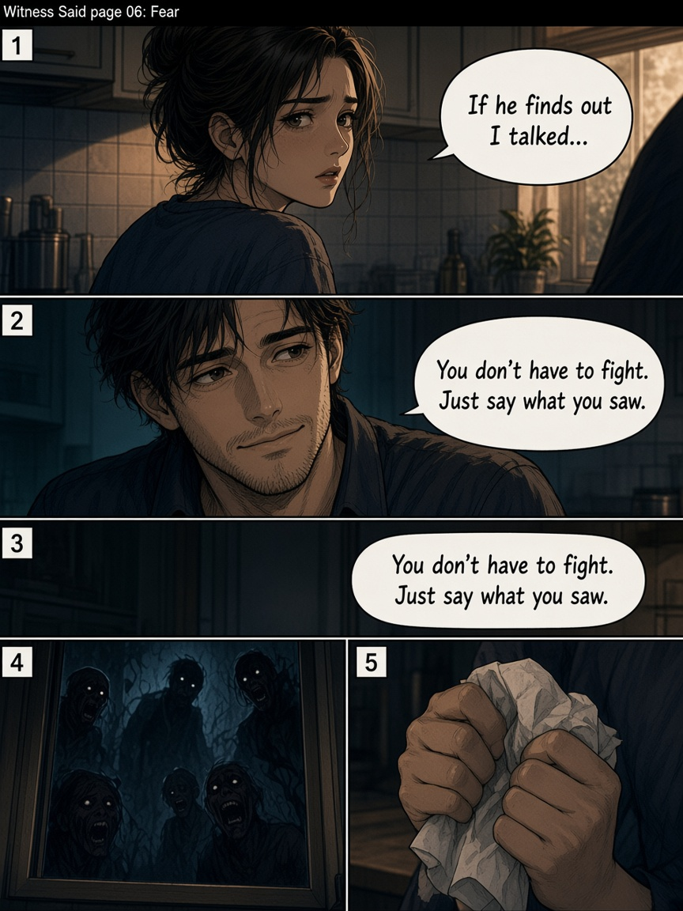
If he finds out I talked…
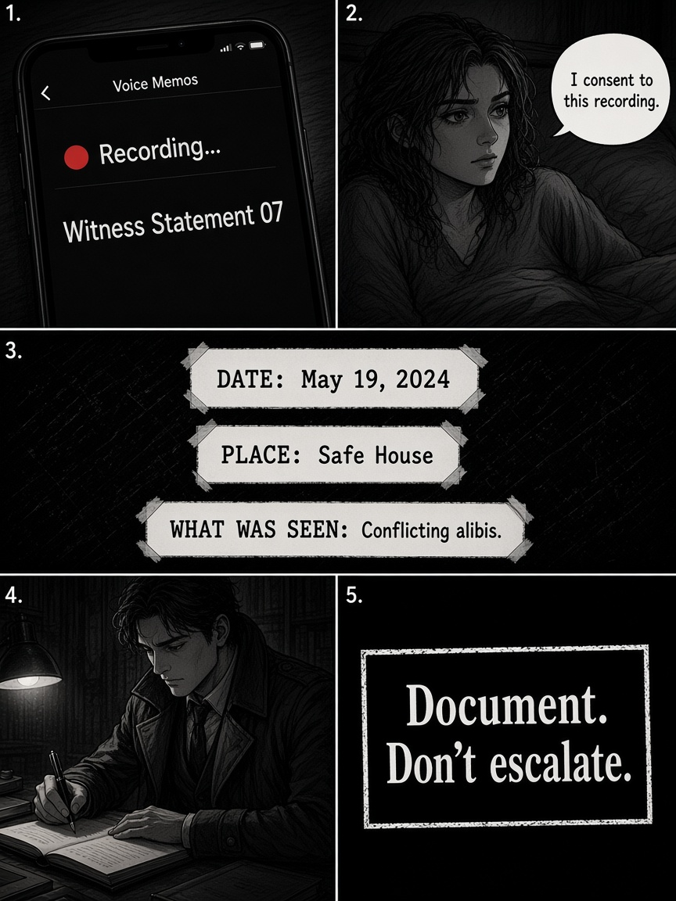
Document. Don’t escalate.
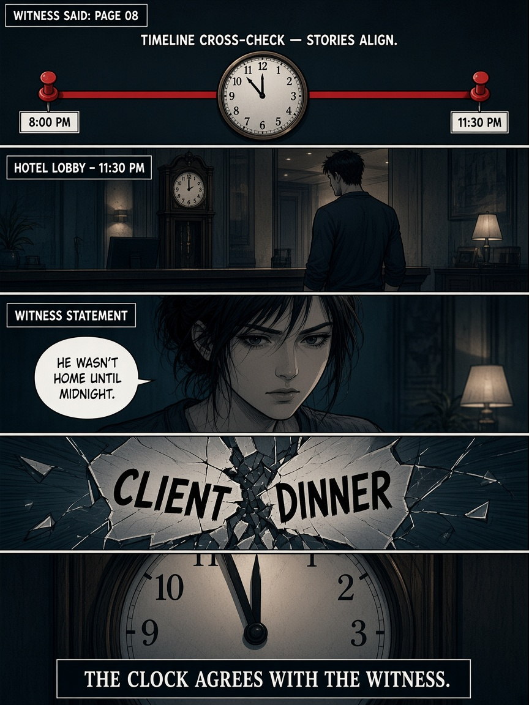
The clock agrees with the witness.
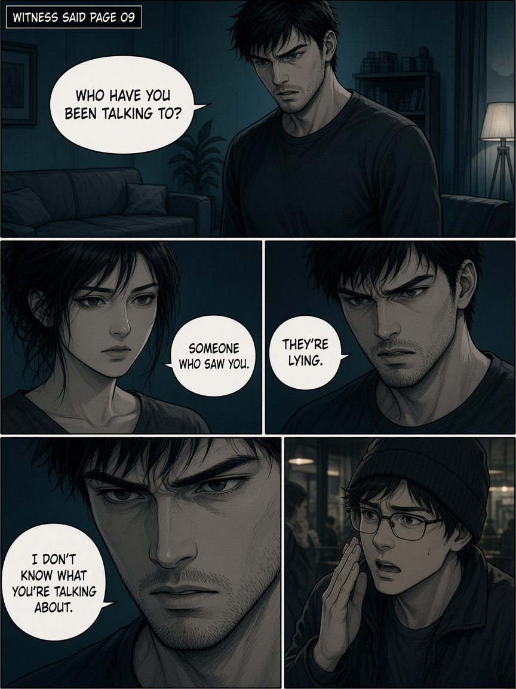
“They’re lying.” Denial is a tell.
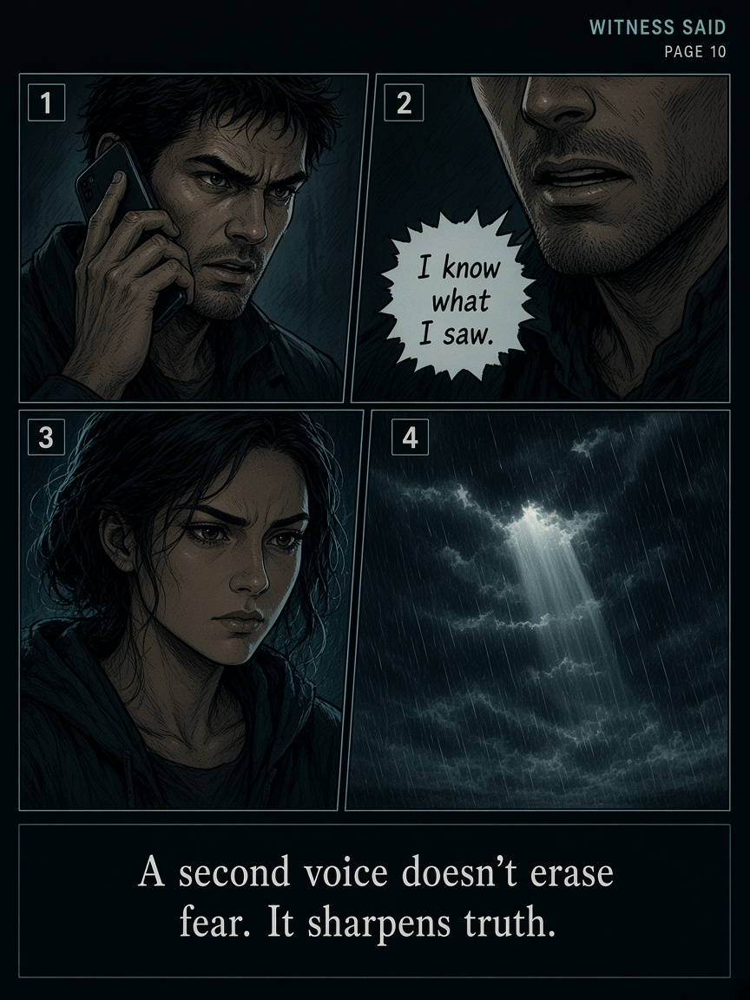
I know what I saw.
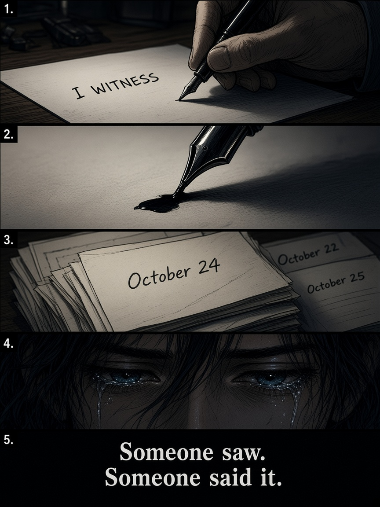
Someone saw. Someone said it.
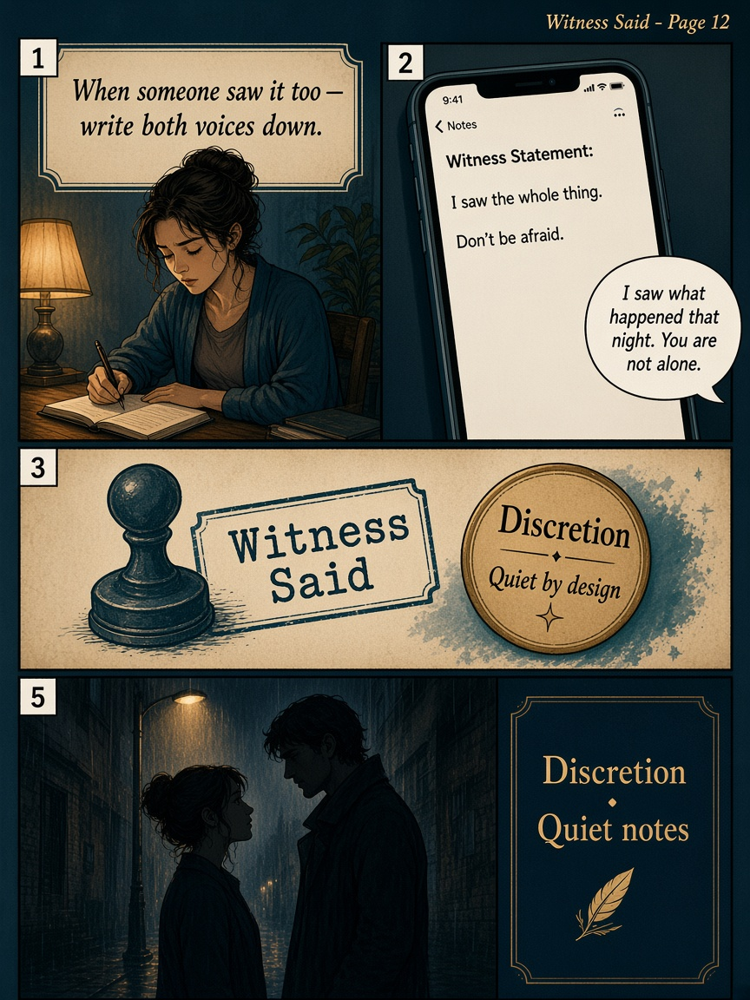
When someone saw it too — write both voices down.
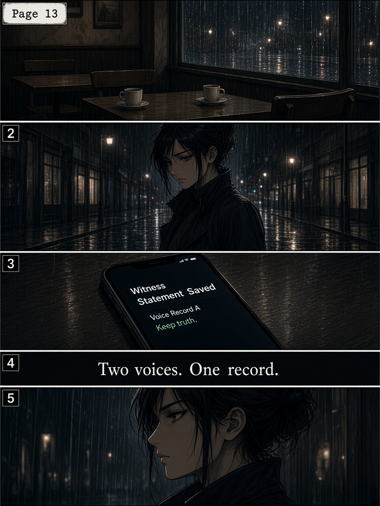
Two voices. One record.
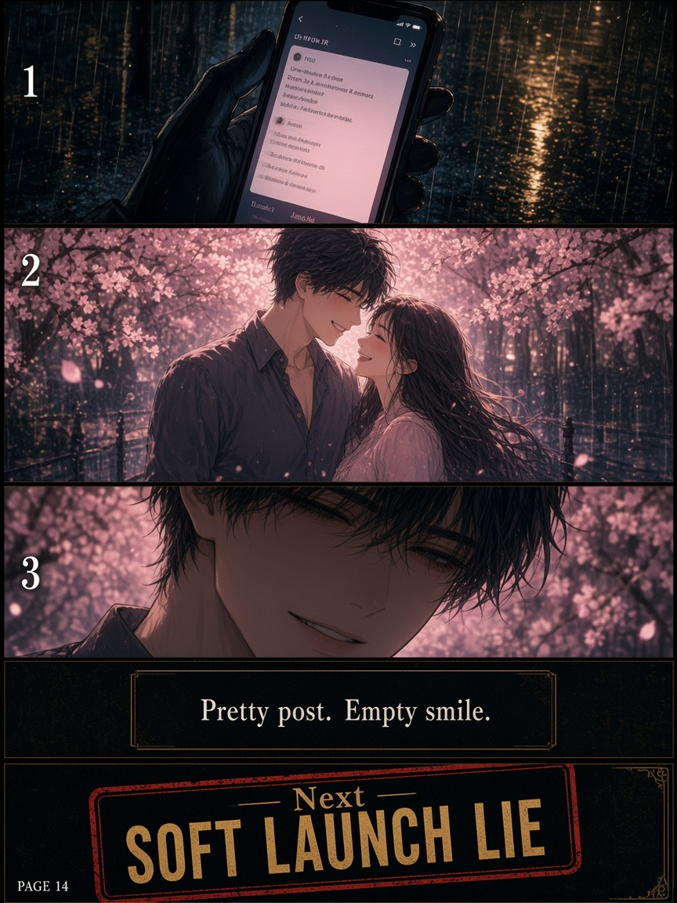
Pretty post. Next: Soft Launch Lie…